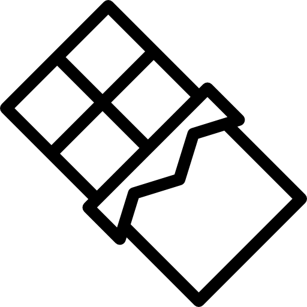

Hidden in Plain Sight
How Forced Labour Shows Up in Everyday Products
Common product categories where forced labour or child labour risks are known to appear.
Clothing & Textiles
Raw cotton and denim production often involves seasonal work and subcontracted farms where oversight is limited.
Garment value chains are long and opaque, hiding labour risk upstream.

Electronics
Mining for minerals and battery production can involve hazardous conditions and informal labour arrangements.
Small parts and components come from many suppliers, increasing risk.
Seafood
Fishing fleets and processing plants sometimes rely on coerced or debt-bonded workers at sea.
Offshore work is hard to monitor and workers can be isolated.

Chocolate & Coffee
Agricultural harvesting and smallholder farms are high-risk settings for child labour and exploitation.
Seasonal harvests and informal labour make protections inconsistent.
Mining & Raw Materials
Artisanal mining and subcontracted supply chains can involve children and forced labour for high-demand minerals.
Minerals feed many industries, making the problem widespread.